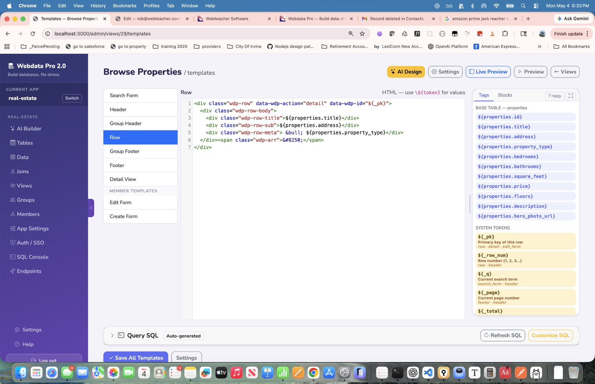
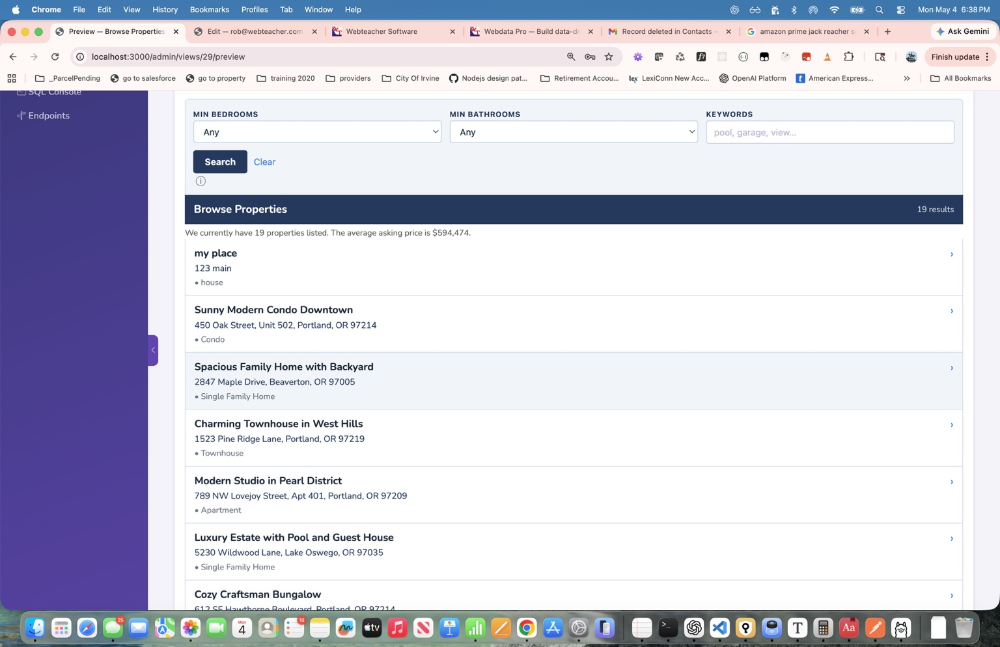

Start with AI
Describe your app in plain English and generate tables, fields, relationships, and sample records in minutes.
Webdata Pro 2.0 helps you create serious web database apps in minutes with AI-generated structure, fully customizable design, embeddable views, and complete control over your data, templates, permissions, and SQL.


The differentiator
Some tools get you started quickly, but trap you inside rigid layouts and black-box workflows. Others give you control, but demand too much time, code, or technical overhead. Webdata Pro 2.0 is the bridge between those two worlds.
Describe your app in plain English and generate tables, fields, relationships, and sample records in minutes.
Edit templates, layouts, SQL, search forms, detail views, permissions, tokens, and workflows without hitting a wall.
Embed searchable views and public forms with a single script tag and make them look native to your brand.
Build real apps, not just demos
Use the platform for customer-facing listings, member experiences, admin tools, searchable catalogs, and structured content that needs to look polished and stay under your control.
Searchable property pages with custom filters, photos, detail views, maps, and branded front-end layouts.
Public or private listings with group access, member homepages, and role-based visibility.
Secure views, own-record filtering, portal navigation, and custom experiences for different member groups.
Accept records without login using configurable forms, hidden fields, redirects, and reCAPTCHA.
Inventories, archives, directories, listings, and structured datasets with flexible search controls.
Quickly build back-office interfaces for workflows, record management, auditing, and day-to-day operations.
Everything you need to build serious database-driven websites
Generate apps from plain-English prompts using Ollama, Claude, GPT, or Gemini, then refine the blueprint by hand.
Use HTML templates with live preview for rows, detail pages, search forms, headers, footers, groups, and member views.
Choose SQLite or MySQL, manage joins visually, inspect schema, and drop into SQL whenever you want full control.
Publish searchable views and public forms on WordPress, Squarespace, or raw HTML with one script tag.
Support logins, groups, own-record filtering, impersonation, portal navigation, and configurable access control.
Hooks, audit logs, notifications, geocoding, activity dashboards, and advanced SQL when projects demand more.
From prompt to polished output
Tell the AI what you want to build in plain English. Generate tables, fields, joins, and sample records fast.
Adjust templates, tokens, fields, search behavior, permissions, forms, SQL, and detail views until the app fits your needs.
Embed a polished, searchable, branded experience directly on your existing website with one script tag.
Start fast without giving up ownership
Built from real-world experience
Webdata Pro 2.0 is the modern rebuild of a platform that originally powered real database-driven websites for 17 years. That history shaped the product: practical features, flexible templates, serious control, and a design philosophy focused on building useful tools people can actually own.
It is built for the people who want the speed of AI, the convenience of embeddable apps, and the confidence that they can keep shaping the system as their project grows more sophisticated.
Launch quickly. Customize completely.
Create your first database-driven app in minutes, then shape every detail until it fits your site, your workflow, and your vision.